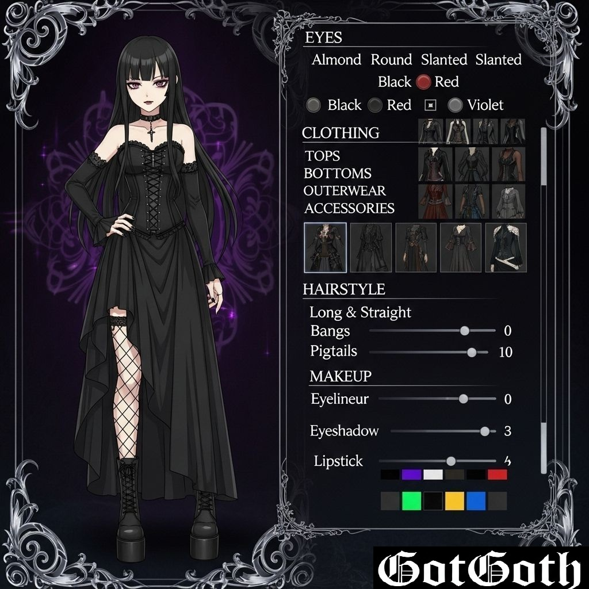
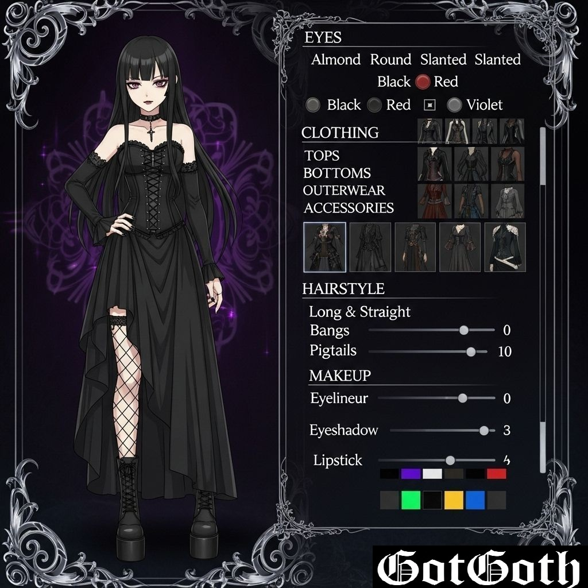

Welcome to GothBuilt.fun — a one-of-a-kind experience where creativity and gothic aesthetics collide. This project lets you customize your own goth girl character with detailed features that reflect your style, mood, and imagination. From facial expressions to eye color, skin tone, makeup, and accessories, every element is designed to be adjustable — making each character unique and personal.
Our goal is to deliver a fun, interactive way to build dark, stylish avatars that feel alive on your screen. Whether you’re here for the aesthetic, the vibe, or just for fun, you’ll find that every option is crafted to match the spirit of goth culture while staying visually sleek and accessible.
In the near future, we’re planning to introduce AI-powered animated models — bringing your goth girl to life with smooth expressions, subtle movements, and intelligent reactions. Whether on your phone or desktop, your avatar will be more than just an image — it’ll respond, emote, and evolve with your inputs and style.
This is just the beginning. Join us as we continue building the ultimate gothic desktop companion — smart, stylish, and uniquely yours.
Features & Customization
The heart of this project lies in its deep visual customization system. Our intuitive interface allows you to personalize your goth girl character with precise control over nearly every detail — offering a creative, hands-on experience.
You’ll explore customization panels dedicated to distinct features such as:
eyes, clothing, skin tone, makeup, hair style, facial expressions, accessories, background themes, body mods, and more.
Each section provides a range of detailed options — whether it’s adjusting iris size and color, adding gothic chokers, or selecting moody makeup styles.
These panels are designed to be sleek, scrollable, and icon-driven — giving you quick access to every trait that defines your unique aesthetic. And as we expand, you'll also see new panel types and assets added regularly to reflect community suggestions and trends in goth fashion.
In the near future, we’re also working on integrating animated goth avatars powered by AI. These characters will blink, emote, and react to your inputs in real-time — blurring the line between digital art and living desktop companions.
Below are two sample customization panels currently in development, showcasing the eyes and clothing categories.
 

Roadmap
Phase 1: Project launch and initial avatar customization.
Phase 2: Launch the $goth coin.
Phase 3: Release AI-powered animated goth avatars.
Phase 4: Add accessories and body mods.